Лабораторная работа 2. Простой сайт на Django
Студент: Смирнов Фёдор, группа K3340.
Цель работы: овладеть практическими навыками и умениями реализации веб-сервисов средствами Django.
Вариант работы: 3 - «Табло авиаперелётов». О рейсе хранятся номер, авиакомпания, вылет, прилёт, тип (прилёт или вылет) и номер гейта. Нужно реализовать:
- регистрацию новых пользователей;
- просмотр рейсов и бронирование мест, редактирование и удаление своих броней;
- регистрацию пассажира на рейс и ввод номера его билета администратором средствами Django-admin;
- таблицу всех пассажиров рейса;
- отзывы к рейсам: дата рейса, текст, оценка от 1 до 10, информация об авторе.
Сайт сделан на Django 5.2 и PostgreSQL 17, оформлен на Bootstrap 5. Шаблоны написаны на языке шаблонов Django, у него тот же синтаксис {{ }} и {% %}, что у Jinja2. Код лежит в students/K3340/Smirnov_Fedor/laboratory_work_2: проект airport, приложение board, шаблоны в папке templates.
Запуск
Сайт работает с базой PostgreSQL airport, владелец которой - пользователь airport с паролем airport. Они создаются один раз в psql или pgAdmin от имени postgres:
CREATE USER airport WITH PASSWORD 'airport';
CREATE DATABASE airport OWNER airport;
Подключение описано в settings.py:
DATABASES = {
'default': {
'ENGINE': 'django.db.backends.postgresql',
'NAME': 'airport',
'USER': 'airport',
'PASSWORD': 'airport',
'HOST': 'localhost',
'PORT': '5432',
}
}
pip install -r requirements.txt
python manage.py migrate
python manage.py loaddata flights
python manage.py createsuperuser
python manage.py runserver
loaddata загружает 12 рейсов из board/fixtures/flights.json. Сайт открывается по адресу http://127.0.0.1:8000/.
Модель данных
| Модель | Поля | Связи |
|---|---|---|
Flight - рейс |
номер, авиакомпания, тип (вылет или прилёт), откуда, куда, время вылета и прилёта, гейт, число мест | - |
Booking - бронь |
место, номер билета, отметка о регистрации | рейс и пассажир (ForeignKey) |
Comment - отзыв |
дата рейса, текст, оценка 1-10 | рейс и автор (ForeignKey) |
Пользователь - это стандартная модель Django User, имя и фамилия заполняются при регистрации.
Бронь связывает рейс и пользователя, и у этой связи есть свои поля: место, билет и регистрация. unique_together не даёт занять одно место рейса дважды. related_name задаёт обратные связи: flight.bookings - брони рейса, flight.comments - его отзывы. Тип рейса хранится кодом departure или arrival, а на странице выводится подпись «Вылет» или «Прилёт» (choices).
from django.conf import settings
from django.db import models
class Flight(models.Model):
KINDS = (
('departure', 'Вылет'),
('arrival', 'Прилёт'),
)
number = models.CharField('Номер рейса', max_length=10)
airline = models.CharField('Авиакомпания', max_length=100)
kind = models.CharField('Тип', max_length=10, choices=KINDS)
from_city = models.CharField('Откуда', max_length=100)
to_city = models.CharField('Куда', max_length=100)
takeoff = models.DateTimeField('Вылет')
landing = models.DateTimeField('Прилёт')
gate = models.CharField('Гейт', max_length=5)
seats = models.PositiveIntegerField('Мест в самолёте')
class Meta:
ordering = ['takeoff']
verbose_name = 'рейс'
verbose_name_plural = 'рейсы'
def __str__(self):
return f'{self.number} {self.from_city} - {self.to_city}'
class Booking(models.Model):
flight = models.ForeignKey(Flight, on_delete=models.CASCADE, related_name='bookings', verbose_name='Рейс')
passenger = models.ForeignKey(settings.AUTH_USER_MODEL, on_delete=models.CASCADE, verbose_name='Пассажир')
seat = models.PositiveIntegerField('Место')
ticket = models.CharField('Номер билета', max_length=20, blank=True)
checked_in = models.BooleanField('Зарегистрирован', default=False)
class Meta:
unique_together = ['flight', 'seat']
verbose_name = 'бронь'
verbose_name_plural = 'брони'
def __str__(self):
return f'{self.flight.number}, место {self.seat}'
class Comment(models.Model):
flight = models.ForeignKey(Flight, on_delete=models.CASCADE, related_name='comments', verbose_name='Рейс')
author = models.ForeignKey(settings.AUTH_USER_MODEL, on_delete=models.CASCADE, verbose_name='Автор')
flight_date = models.DateField('Дата рейса')
text = models.TextField('Комментарий')
rating = models.PositiveSmallIntegerField('Оценка', choices=[(n, n) for n in range(1, 11)])
class Meta:
verbose_name = 'отзыв'
verbose_name_plural = 'отзывы'
def __str__(self):
return f'{self.author} о рейсе {self.flight.number}'
Адреса
| Адрес | Представление | Что делает | Кому доступно |
|---|---|---|---|
/ |
board |
табло: поиск, фильтр, страницы | всем |
/signup/ |
SignUpView |
регистрация | всем |
/accounts/login/, /accounts/logout/ |
LoginView, LogoutView из Django |
вход и выход | всем |
/flights/<id>/ |
flight_page |
рейс, пассажиры, отзывы | всем |
/flights/<id>/book/ |
book_seat |
бронь места | вошедшим |
/flights/<id>/comment/ |
add_comment |
отзыв | вошедшим |
/bookings/ |
my_bookings |
мои брони | вошедшим |
/bookings/<id>/change/ |
change_booking |
смена места | владельцу брони до регистрации |
/bookings/<id>/cancel/ |
cancel_booking |
отмена брони | владельцу брони до регистрации |
/bookings/<id>/check-in/ |
check_in |
билет и регистрация | администратору |
/admin/ |
Django-admin | управление данными | администратору |
from django.contrib import admin
from django.urls import include, path
urlpatterns = [
path('admin/', admin.site.urls),
path('accounts/', include('django.contrib.auth.urls')),
path('', include('board.urls')),
]
from django.urls import path
from . import views
urlpatterns = [
path('', views.board, name='board'),
path('signup/', views.SignUpView.as_view(), name='signup'),
path('flights/<int:pk>/', views.flight_page, name='flight'),
path('flights/<int:pk>/book/', views.book_seat, name='book_seat'),
path('flights/<int:pk>/comment/', views.add_comment, name='add_comment'),
path('bookings/', views.my_bookings, name='my_bookings'),
path('bookings/<int:pk>/change/', views.change_booking, name='change_booking'),
path('bookings/<int:pk>/cancel/', views.cancel_booking, name='cancel_booking'),
path('bookings/<int:pk>/check-in/', views.check_in, name='check_in'),
]
Табло: поиск, фильтр и страницы
board берёт все рейсы и сужает выборку по параметрам запроса. Параметр q ищет текст в номере рейса, авиакомпании и обоих городах сразу: условия объединены через Q и |, то есть через «или». icontains ищет вхождение без учёта регистра. Параметр kind оставляет только вылеты или только прилёты. Paginator делит результат на страницы по 5 рейсов, а get_page возвращает страницу с номером из параметра page.
def board(request):
flights = Flight.objects.all()
query = request.GET.get('q', '')
kind = request.GET.get('kind', '')
if query:
flights = flights.filter(
Q(number__icontains=query) | Q(airline__icontains=query)
| Q(from_city__icontains=query) | Q(to_city__icontains=query)
)
if kind:
flights = flights.filter(kind=kind)
page = Paginator(flights, 5).get_page(request.GET.get('page'))
return render(request, 'board.html', {'page': page, 'query': query, 'kind': kind})
В ссылках «Назад» и «Вперёд» повторяются q и kind, поэтому при переходе на другую страницу поиск и фильтр сохраняются:
<ul class="pagination">
{% if page.has_previous %}
<li class="page-item">
<a class="page-link" href="?page={{ page.previous_page_number }}&q={{ query|urlencode }}&kind={{ kind }}">Назад</a>
</li>
{% endif %}
<li class="page-item disabled">
<span class="page-link">Страница {{ page.number }} из {{ page.paginator.num_pages }}</span>
</li>
{% if page.has_next %}
<li class="page-item">
<a class="page-link" href="?page={{ page.next_page_number }}&q={{ query|urlencode }}&kind={{ kind }}">Вперёд</a>
</li>
{% endif %}
</ul>
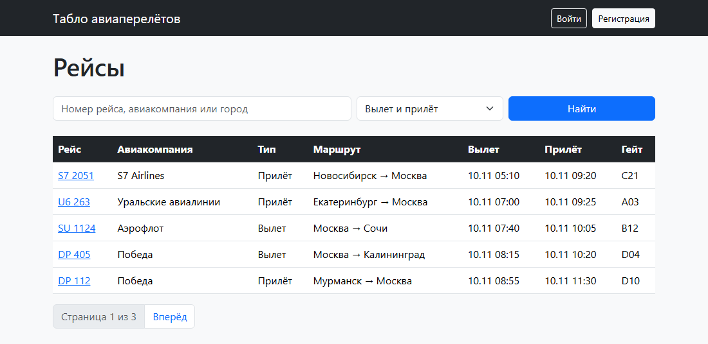
Поиск «москва» с фильтром «Только вылет», вторая страница:
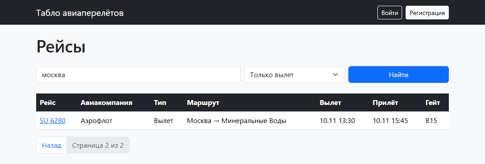
Регистрация и вход
Форма регистрации наследует UserCreationForm и добавляет к логину имя и фамилию. SignUpView - представление на основе класса CreateView: оно показывает форму, сохраняет пользователя и перенаправляет на страницу входа. Вход и выход - готовые представления Django, подключённые строкой include('django.contrib.auth.urls').
class SignUpForm(UserCreationForm):
class Meta(UserCreationForm.Meta):
fields = ['username', 'first_name', 'last_name']
class SignUpView(CreateView):
form_class = SignUpForm
template_name = 'registration/signup.html'
success_url = reverse_lazy('login')
Меню в base.html зависит от пользователя: гость видит «Войти» и «Регистрация», вошедший - «Мои брони» и «Выйти», администратор ещё и ссылку на Django-admin.
<nav class="navbar navbar-dark bg-dark mb-4">
<div class="container">
<a class="navbar-brand" href="{% url 'board' %}">Табло авиаперелётов</a>
<div class="d-flex align-items-center gap-2">
{% if user.is_authenticated %}
<a class="btn btn-outline-light btn-sm" href="{% url 'my_bookings' %}">Мои брони</a>
{% if user.is_staff %}
<a class="btn btn-warning btn-sm" href="{% url 'admin:index' %}">Django-admin</a>
{% endif %}
<span class="text-light">{{ user.username }}</span>
<form method="post" action="{% url 'logout' %}">
{% csrf_token %}
<button class="btn btn-outline-light btn-sm">Выйти</button>
</form>
{% else %}
<a class="btn btn-outline-light btn-sm" href="{% url 'login' %}">Войти</a>
<a class="btn btn-light btn-sm" href="{% url 'signup' %}">Регистрация</a>
{% endif %}
</div>
</div>
</nav>
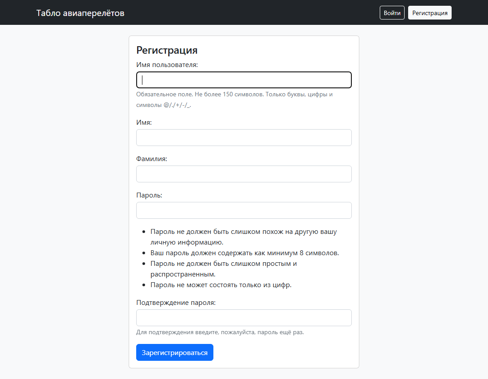
Страница рейса и таблица пассажиров
flight_page передаёт в шаблон рейс, его брони и отзывы. select_related загружает пассажиров и авторов тем же запросом через JOIN, а не отдельным запросом на каждую строку таблицы. Свободные места - число мест минус число броней.
def flight_page(request, pk):
flight = get_object_or_404(Flight, pk=pk)
passengers = flight.bookings.select_related('passenger').order_by('seat')
comments = flight.comments.select_related('author').order_by('-id')
context = {
'flight': flight,
'passengers': passengers,
'comments': comments,
'free': flight.seats - passengers.count(),
}
return render(request, 'flight.html', context)
Обычный пользователь видит в таблице место и имя пассажира. Администратор видит ещё номер билета, отметку о регистрации и кнопку «Зарегистрировать». Разграничение сделано проверкой user.is_staff в шаблоне:
<h2>Пассажиры рейса</h2>
<table class="table bg-white mb-4">
<thead>
<tr>
<th>Место</th>
<th>Пассажир</th>
{% if user.is_staff %}
<th>Номер билета</th>
<th>Регистрация</th>
<th></th>
{% endif %}
</tr>
</thead>
<tbody>
{% for booking in passengers %}
<tr>
<td>{{ booking.seat }}</td>
<td>{{ booking.passenger.get_full_name|default:booking.passenger.username }}</td>
{% if user.is_staff %}
<td>{{ booking.ticket|default:'-' }}</td>
<td>{% if booking.checked_in %}зарегистрирован{% else %}нет{% endif %}</td>
<td><a class="btn btn-warning btn-sm" href="{% url 'check_in' booking.pk %}">Зарегистрировать</a></td>
{% endif %}
</tr>
{% empty %}
<tr><td colspan="5">Мест пока никто не бронировал</td></tr>
{% endfor %}
</tbody>
</table>
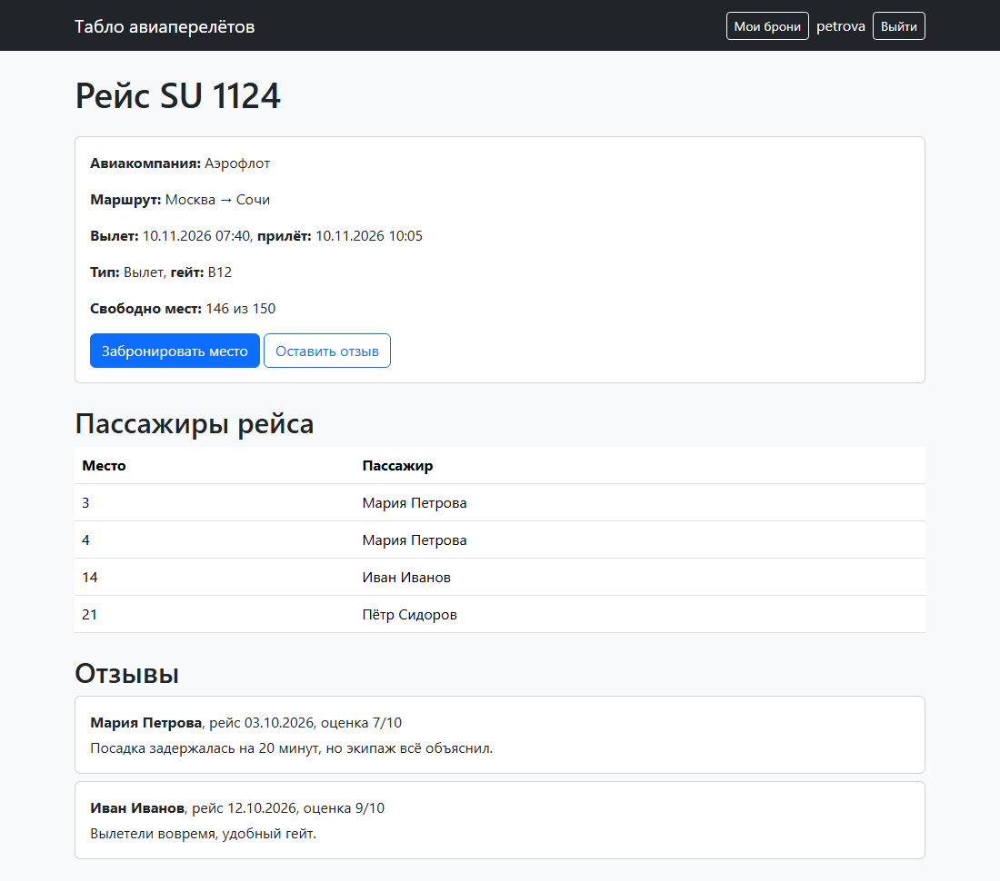
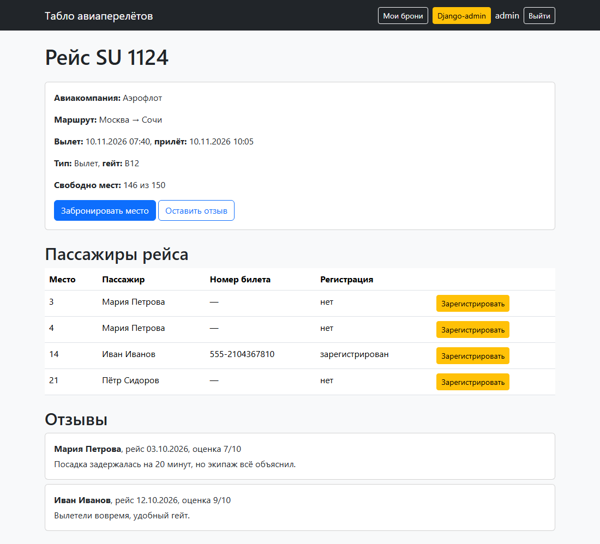
Бронирование мест
В форму брони передаётся заготовка Booking(flight=flight, passenger=request.user) как instance. Пользователь вводит только место, а рейс и пассажира подставляет сервер. clean_seat проверяет, что такое место есть в самолёте и оно свободно. exclude(pk=self.instance.pk) не считает занятым место самой брони, поэтому при редактировании можно оставить прежнее.
class BookingForm(forms.ModelForm):
class Meta:
model = Booking
fields = ['seat']
def clean_seat(self):
seat = self.cleaned_data['seat']
flight = self.instance.flight
if seat < 1 or seat > flight.seats:
raise forms.ValidationError(f'Выберите место от 1 до {flight.seats}')
if flight.bookings.filter(seat=seat).exclude(pk=self.instance.pk).exists():
raise forms.ValidationError('Это место уже занято')
return seat
@login_required
def book_seat(request, pk):
flight = get_object_or_404(Flight, pk=pk)
booking = Booking(flight=flight, passenger=request.user)
if request.method == 'POST':
form = BookingForm(request.POST, instance=booking)
if form.is_valid():
form.save()
return redirect('my_bookings')
else:
form = BookingForm(instance=booking)
return render(request, 'booking_form.html', {'form': form, 'flight': flight})
@login_required
def my_bookings(request):
bookings = Booking.objects.filter(passenger=request.user).select_related('flight').order_by('flight__takeoff', 'seat')
return render(request, 'my_bookings.html', {'bookings': bookings})
@login_required
def change_booking(request, pk):
booking = get_object_or_404(Booking, pk=pk, passenger=request.user, checked_in=False)
if request.method == 'POST':
form = BookingForm(request.POST, instance=booking)
if form.is_valid():
form.save()
return redirect('my_bookings')
else:
form = BookingForm(instance=booking)
return render(request, 'booking_form.html', {'form': form, 'flight': booking.flight})
@login_required
def cancel_booking(request, pk):
booking = get_object_or_404(Booking, pk=pk, passenger=request.user, checked_in=False)
if request.method == 'POST':
booking.delete()
return redirect('my_bookings')
return render(request, 'booking_cancel.html', {'booking': booking})
@login_required отправляет гостя на страницу входа. get_object_or_404(Booking, pk=pk, passenger=request.user, checked_in=False) находит бронь, только если она принадлежит текущему пользователю и он ещё не зарегистрирован на рейс, иначе возвращается 404.
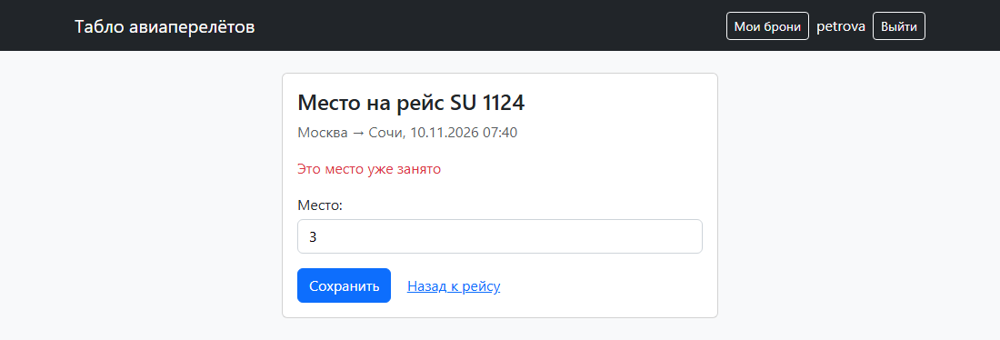
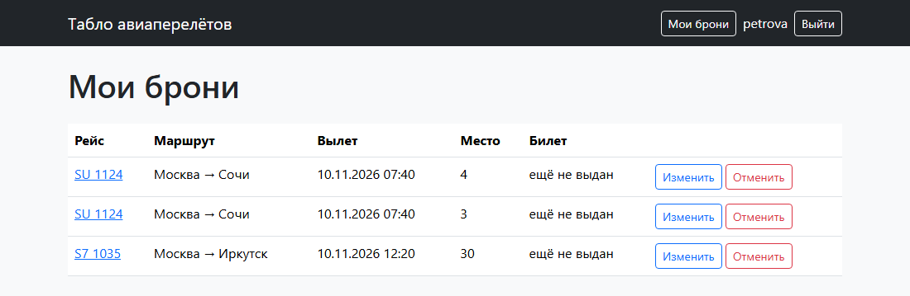
После регистрации на рейс в брони появляется номер билета, а кнопки «Изменить» и «Отменить» пропадают:
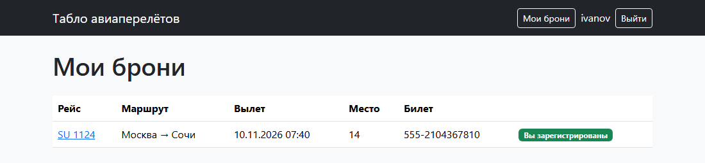
Отзывы
В форме отзыва три поля: дата рейса, оценка и текст. Оценка задана через choices от 1 до 10, поэтому на странице это выпадающий список, и другое значение форма не примет. Для даты браузер показывает календарь (type="date"). Рейс и автор подставляются так же, как в брони, а на странице рейса рядом с отзывом выводятся имя автора, дата рейса и оценка.
class CommentForm(forms.ModelForm):
class Meta:
model = Comment
fields = ['flight_date', 'rating', 'text']
widgets = {'flight_date': forms.DateInput(attrs={'type': 'date'})}
@login_required
def add_comment(request, pk):
flight = get_object_or_404(Flight, pk=pk)
comment = Comment(flight=flight, author=request.user)
if request.method == 'POST':
form = CommentForm(request.POST, instance=comment)
if form.is_valid():
form.save()
return redirect('flight', pk=pk)
else:
form = CommentForm(instance=comment)
return render(request, 'comment_form.html', {'form': form, 'flight': flight})
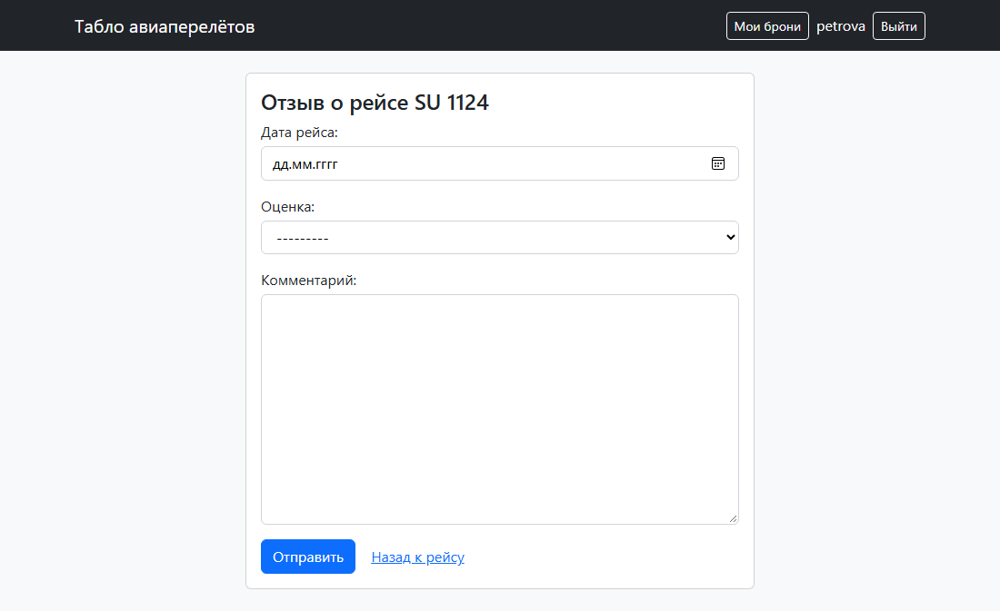
Регистрация пассажира и номер билета
В Django-admin рейс открывается вместе со своими бронями: BookingInline выводит их таблицей на странице рейса. Там администратор добавляет пассажира на место, вписывает номер билета и ставит отметку «Зарегистрирован». В списках настроены колонки (list_display), фильтры (list_filter) и поиск (search_fields).
from django.contrib import admin
from .models import Booking, Comment, Flight
class BookingInline(admin.TabularInline):
model = Booking
extra = 1
class FlightAdmin(admin.ModelAdmin):
list_display = ['number', 'airline', 'kind', 'from_city', 'to_city', 'takeoff', 'gate']
list_filter = ['kind', 'airline']
search_fields = ['number', 'airline', 'from_city', 'to_city']
inlines = [BookingInline]
class BookingAdmin(admin.ModelAdmin):
list_display = ['flight', 'passenger', 'seat', 'ticket', 'checked_in']
list_filter = ['checked_in', 'flight']
class CommentAdmin(admin.ModelAdmin):
list_display = ['flight', 'author', 'flight_date', 'rating']
admin.site.register(Flight, FlightAdmin)
admin.site.register(Booking, BookingAdmin)
admin.site.register(Comment, CommentAdmin)
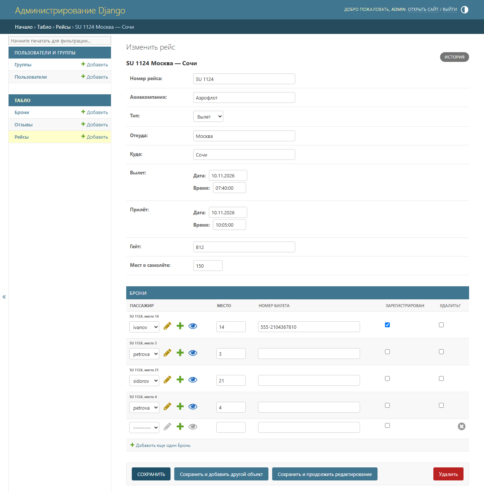
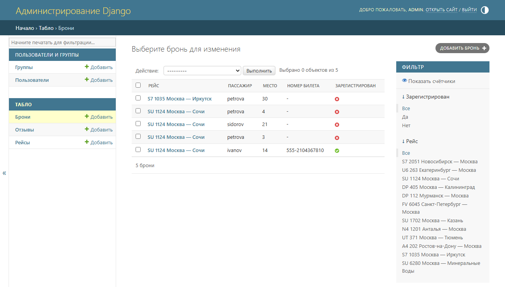
То же администратор может сделать на сайте: кнопка «Зарегистрировать» в таблице пассажиров открывает форму check_in. Декоратор @staff_member_required пускает на неё только пользователей с is_staff.
class TicketForm(forms.ModelForm):
class Meta:
model = Booking
fields = ['ticket', 'checked_in']
@staff_member_required
def check_in(request, pk):
booking = get_object_or_404(Booking, pk=pk)
if request.method == 'POST':
form = TicketForm(request.POST, instance=booking)
if form.is_valid():
form.save()
return redirect('flight', pk=booking.flight.pk)
else:
form = TicketForm(instance=booking)
return render(request, 'check_in.html', {'form': form, 'booking': booking})
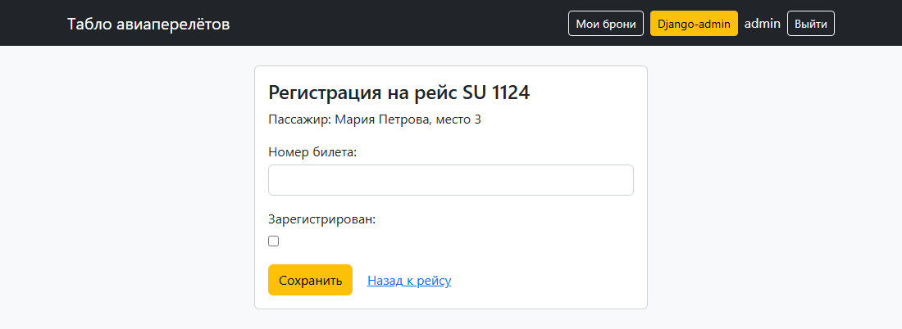
Вывод
Сайт построен по схеме Django «модель - представление - шаблон». Модели описывают рейсы, брони и отзывы, а таблицы в PostgreSQL по ним создают миграции. Представления получают запрос, обращаются к базе через ORM и отдают шаблон с данными, а адреса в urls.py связывают URL с представлениями. Формы на основе ModelForm проверяют ввод: место должно быть в самолёте и свободно, оценка - от 1 до 10. Права разделены на трёх уровнях: гость только смотрит, вошедший пользователь бронирует места и пишет отзывы, а администратор в браузере и в Django-admin видит билеты и регистрирует пассажиров. Табло поддерживает поиск, фильтр по типу рейса и разбивку на страницы.